ATM
Autoridad de Transito Mancomunada Centro Guayas EP
Version: 1.0
Fecha: Marzo 2026
Clasificacion: Documento Confidencial
La presente propuesta tecnica detalla el rediseno integral del portal web institucional de la Autoridad de Transito Mancomunada Centro Guayas EP (ATM Centro Guayas), entidad publica encargada de la gestion del transito, transporte terrestre y seguridad vial en siete cantones de la provincia del Guayas: Nobol, Daule, Lomas de Sargentillo, Isidro Ayora, Pedro Carbo, Santa Lucia y Colimes.
El portal actual, desarrollado sobre Joomla 3 —un CMS cuyo soporte oficial finalizo en agosto de 2023—, presenta limitaciones criticas en materia de seguridad, rendimiento, experiencia de usuario y ausencia total de servicios digitales transaccionales. El ciudadano que requiere realizar un tramite vehicular debe desplazarse fisicamente a una de las tres oficinas de la mancomunidad, con los costos de tiempo y recursos que esto implica.
La solucion propuesta consiste en una plataforma web moderna construida con tecnologias actuales de desarrollo, que incorpora:
Impacto estimado: La digitalizacion de los cuatro tramites vehiculares mas frecuentes (matriculacion primera vez, renovacion, duplicado de placas y transferencia de dominio) puede reducir en un 60-70% la necesidad de visitas presenciales, beneficiando directamente a mas de 350,000 habitantes de los cantones mancomunados.
La presente propuesta de rediseno surge de la necesidad critica de actualizar la plataforma web institucional de ATM Centro Guayas EP. El sitio web actual fue implementado sobre Joomla 3, un sistema de gestion de contenidos (CMS) de codigo abierto que alcanzo su fin de vida util (End of Life) en agosto de 2023. Esto significa que el proyecto Joomla ya no publica actualizaciones de seguridad, parches ni correcciones de errores para esta version, dejando al portal expuesto a vulnerabilidades conocidas y sin posibilidad de soporte tecnico oficial.
Joomla 3 fue lanzado en 2012 y, si bien cumplio un rol importante en su momento, la evolucion de las tecnologias web, los estandares de accesibilidad, las expectativas ciudadanas de servicios digitales y los requerimientos normativos de gobierno electronico han dejado obsoleta esta plataforma. La migracion a Joomla 4 o 5 implicaria una reconstruccion casi total del sitio sin resolver las carencias funcionales fundamentales (ausencia de tramites en linea, pagos digitales y trazabilidad de procesos). Por esta razon, se propone un rediseno integral sobre tecnologias modernas que permitan no solo actualizar la presencia web, sino transformar digitalmente la operacion de la entidad.
| Area | Problema | Impacto |
|---|---|---|
| Tecnologia | Joomla 3 sin soporte, PHP desactualizado | Vulnerabilidades de seguridad criticas |
| Servicios digitales | Inexistentes: no hay tramites ni pagos online | 100% de tramites requieren presencia fisica |
| Responsive | Diseno no adaptable a dispositivos moviles | Experiencia degradada en smartphones (65%+ del trafico) |
| Rendimiento | Tiempo de carga superior a 8 segundos | Alta tasa de abandono, mala percepcion institucional |
| Accesibilidad | No cumple estandares WCAG | Exclusion de usuarios con discapacidades |
| Contenido | Informacion desactualizada, navegacion confusa | El ciudadano no encuentra lo que busca |
| SEO | Sin optimizacion para motores de busqueda | Baja visibilidad en Google |
El Gobierno Nacional de Ecuador, a traves del Plan de Gobierno Electronico y la Ley Organica de Transparencia y Acceso a la Informacion Publica (LOTAIP), establece que las entidades publicas deben facilitar el acceso ciudadano a traves de medios digitales. La modernizacion del portal de ATM Centro Guayas no solo es una mejora tecnica, sino un cumplimiento normativo que posiciona a la institucion como referente de gobierno digital en la provincia del Guayas.
La plataforma se desarrolla como una Single Page Application (SPA), un patron arquitectonico que carga una unica pagina HTML y actualiza dinamicamente el contenido sin recargas completas del navegador. Esto proporciona una experiencia fluida, similar a una aplicacion nativa, con tiempos de navegacion entre secciones practicamente instantaneos.
| Tecnologia | Version | Justificacion |
|---|---|---|
| React | 19.x | Libreria de interfaces de usuario mas utilizada del ecosistema, con la mayor comunidad de soporte y ecosistema de componentes. Respaldada por Meta (Facebook). Curva de aprendizaje accesible para mantenimiento futuro. |
| Vite | 6.x | Herramienta de construccion de nueva generacion que ofrece tiempos de compilacion hasta 10x mas rapidos que Webpack (Create React App). Hot Module Replacement instantaneo durante el desarrollo. |
| React Router | v7 | Solucion de enrutamiento estandar para aplicaciones React. Permite navegacion entre paginas sin recarga, con soporte para rutas protegidas (autenticacion), parametros dinamicos y carga diferida. |
| CSS Custom Properties | Nativo | Variables CSS nativas del navegador para el sistema de diseno. Eliminan la dependencia de preprocesadores (SASS/Less) y frameworks CSS (Bootstrap/Tailwind), reduciendo el tamano del bundle y manteniendo control total del diseno institucional. |
| Context API | React nativo | Gestion de estado global para la sesion del usuario. Solucion nativa de React que evita dependencias adicionales como Redux, simplificando la arquitectura sin sacrificar funcionalidad. |
| Capa | Componente | Descripcion |
|---|---|---|
| 1. Cliente | Navegador del Ciudadano | Chrome, Safari, Firefox, Edge - acceso desde cualquier dispositivo |
| 2. Hosting | CDN / DigitalOcean App Platform | Hosting estatico con distribucion global de contenido |
| 3. Aplicacion | React SPA | Bundle JS + CSS + assets optimizados para produccion |
| 4. Modulos internos | React Router | Navegacion entre paginas sin recarga |
| Context API | Gestion de sesion y estado global del usuario | |
| localStorage | Almacenamiento local de datos (prototipo) | |
| 5. Backend (fase futura) | API REST + Base de datos | Autenticacion JWT, pasarela de pagos, integracion Odoo |
La aplicacion sigue un patron de composicion de componentes organizado en capas:
La seleccion cromatica se fundamenta en tres criterios: identidad institucional, legibilidad y cumplimiento de estandares de accesibilidad (WCAG 2.1 nivel AA, ratio de contraste minimo 4.5:1 para texto).
| Color | Uso y justificacion |
|---|---|
| Azul Primario | Color institucional principal. Azul marino que transmite autoridad, confianza y seriedad gubernamental. Utilizado en header, titulos, botones primarios y footer. |
| Azul Medio | Variante intermedia para gradientes y elementos secundarios de navegacion. |
| Azul Acento | Azul de acento para enlaces, iconos interactivos y elementos de llamado a la accion. |
| Verde | Indicador de estados positivos: tramites completados, pagos exitosos, disponibilidad de servicios. |
| Rojo | Alertas, errores de validacion y estados de rechazo. Uso restringido para maximizar su impacto comunicativo. |
| Amarillo | Avisos y estados intermedios (en proceso, pendiente). Aporta calidez sin connotacion negativa. |
| Gris Claro | Fondos alternos de secciones. Proporciona separacion visual sin fatigar la lectura. |
La eleccion del azul marino (#003876) como color primario responde a lineamientos de comunicacion gubernamental ecuatoriana, donde los tonos azules son predominantes en entidades de seguridad y transporte. Este color se alinea con la identidad de la Agencia Nacional de Transito (ANT) y mantiene coherencia con el ecosistema visual del sector publico.
Se utiliza Inter como tipografia principal, una familia sans-serif de codigo abierto disenada especificamente para interfaces digitales. Sus caracteristicas:
El sistema de diseno incluye un kit de componentes estandarizado que garantiza consistencia visual en toda la plataforma:
El portal implementa un enfoque mobile-first con tres puntos de quiebre (breakpoints):
| Breakpoint | Rango | Dispositivo | Adaptaciones |
|---|---|---|---|
| Movil | < 480px | Smartphones | Menu hamburguesa, columna unica, botones full-width, tipografia reducida |
| Tablet | 481 - 1024px | Tablets, laptops pequenos | Grid de 2 columnas, navegacion condensada |
| Escritorio | > 1024px | Monitores, laptops | Grid completo, sidebar visible, navegacion expandida |
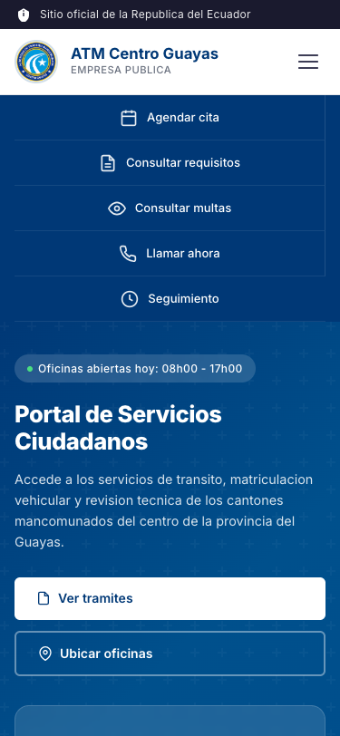 |
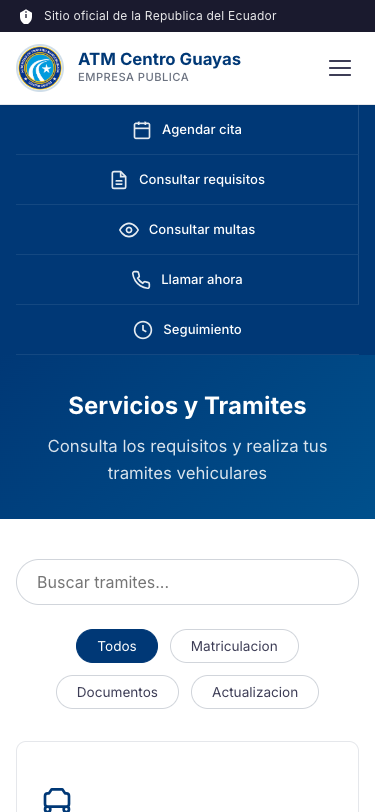 |
| Figuras 1-2: Vistas responsive en dispositivo movil (375px) — Pagina principal y catalogo de servicios. | |
El portal incorpora las siguientes practicas de accesibilidad conforme a las Web Content Accessibility Guidelines (WCAG) 2.1 nivel AA:
prefers-reduced-motion, desactivando animaciones para usuarios sensibles.prefers-contrast: high, reforzando bordes y contrastes.@media print que optimiza la salida impresa.El portal se estructura en secciones claramente diferenciadas, cada una con un proposito comunicativo y funcional especifico. A continuacion se detalla cada seccion con su captura de pantalla correspondiente.
La pagina principal es el punto de entrada del portal y condensa la informacion mas relevante para el ciudadano. Esta compuesta por las siguientes secciones:
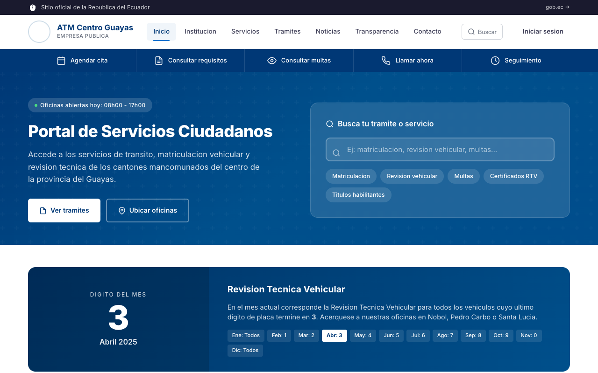
Franja superior oscura con el texto "Sitio oficial de la Republica del Ecuador" y enlace a gob.ec. Es un requisito normativo para todos los sitios web de entidades publicas ecuatorianas, establecido por la Secretaria Nacional de la Administracion Publica.
Barra sticky (se mantiene visible al hacer scroll) con el logo institucional, siete secciones de navegacion (Inicio, Institucion, Servicios, Tramites, Noticias, Transparencia, Contacto) y acceso a la cuenta del usuario. En dispositivos moviles, colapsa a un menu hamburguesa.
Cinco accesos directos a las funciones mas solicitadas: Agendar cita, Consultar requisitos, Consultar multas, Llamar ahora y Seguimiento de tramites. Permite al ciudadano acceder a lo que necesita sin navegar multiples menus.
Seccion principal con gradiente azul, titulo descriptivo, botones de accion (Ver tramites, Ubicar oficinas) y un buscador inteligente con sugerencias de busqueda (Matriculacion, Revision vehicular, Multas, Certificados RTV, Titulos habilitantes). El buscador filtra en tiempo real entre los 13 tramites disponibles.
Banner informativo que indica que digito de placa corresponde a la revision tecnica vehicular en el mes actual. Incluye un calendario anual con los 12 meses y sus digitos asignados, informacion critica que el ciudadano consulta frecuentemente.
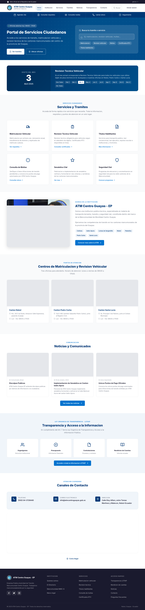
Seis tarjetas que representan las areas principales de servicio: Matriculacion Vehicular, Revision Tecnica, Licencias de Conducir, Multas e Infracciones, Senaletica Vial y Seguridad Vial. Cada tarjeta incluye un icono representativo en azul institucional, titulo y descripcion breve.
Seccion institucional con imagen representativa y texto descriptivo de la mision de ATM Centro Guayas, acompanado de la lista de los siete cantones que conforman la mancomunidad.
Tres tarjetas con las oficinas de atencion (Nobol, Pedro Carbo, Santa Lucia), cada una con imagen, direccion y horario de atencion. Permite al ciudadano ubicar la oficina mas cercana.
Las tres noticias mas recientes en formato de tarjeta con imagen, fecha, titulo y extracto. Enlaza a la pagina de detalle de cada noticia.
Cuatro accesos directos a la informacion de transparencia requerida por la LOTAIP: Organigrama, Presupuesto, Contratacion publica y Rendicion de cuentas.
Informacion de contacto (telefono, email, direccion, horario) con mapa embebido de Google Maps que muestra la ubicacion de la oficina principal en Nobol, incluyendo un boton "Como llegar" que abre Google Maps con indicaciones de ruta.
Pie de pagina en fondo oscuro con cinco columnas: marca institucional, enlaces de la institucion, enlaces de servicios, accesos rapidos y redes sociales (Facebook, Twitter, Instagram). Incluye aviso de copyright.
Pagina dedicada a la identidad institucional de ATM Centro Guayas. Presenta la informacion corporativa en un formato estructurado y profesional que refuerza la imagen de seriedad y compromiso de la entidad.
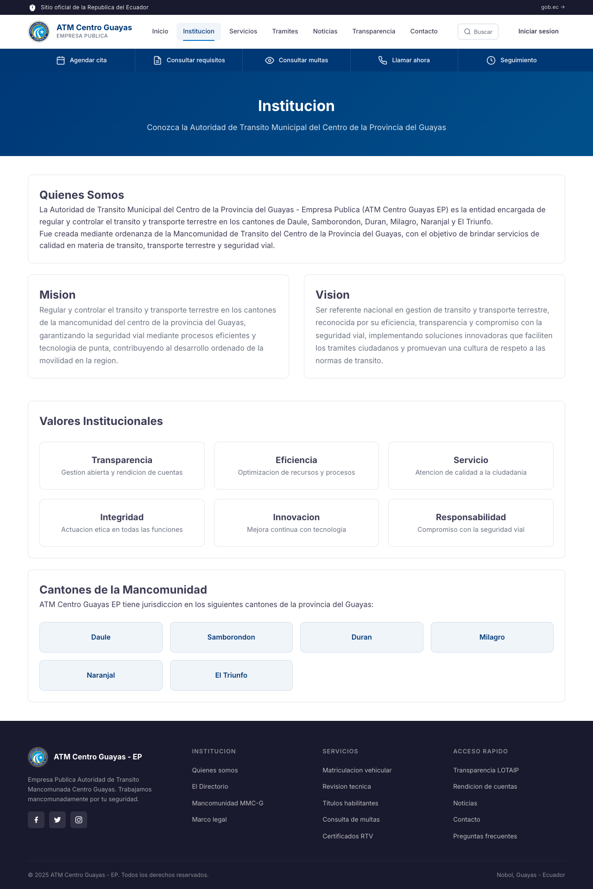
Secciones incluidas:
Pagina que presenta los 13 tramites vehiculares disponibles con capacidad de busqueda en tiempo real y filtrado por categoria. Es el punto de entrada principal para que el ciudadano identifique el tramite que necesita y conozca sus requisitos.
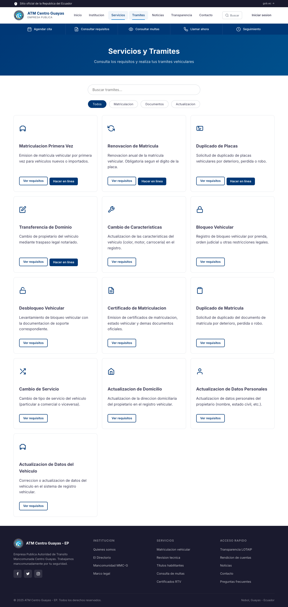
Cada tarjeta de servicio muestra: icono, nombre, descripcion, modalidad (online/presencial), costo aproximado y tiempo estimado de procesamiento. Los servicios disponibles en linea se destacan con un badge verde "Online" y un boton directo para iniciar el tramite.
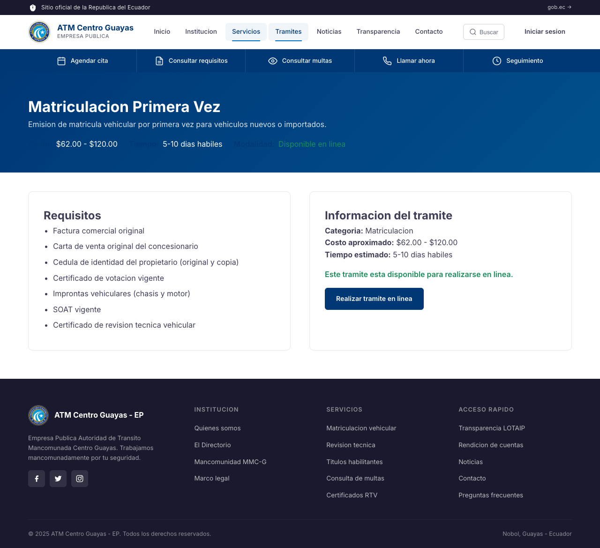
La pagina de detalle de cada servicio proporciona informacion completa: descripcion ampliada, lista de requisitos documentales, costo aproximado, tiempo estimado y la opcion de iniciar el tramite en linea (para los que disponen de esta modalidad) o indicaciones para el tramite presencial.
Seccion de comunicacion institucional que permite mantener informada a la ciudadania sobre las actividades, campanas y comunicados oficiales de ATM Centro Guayas.
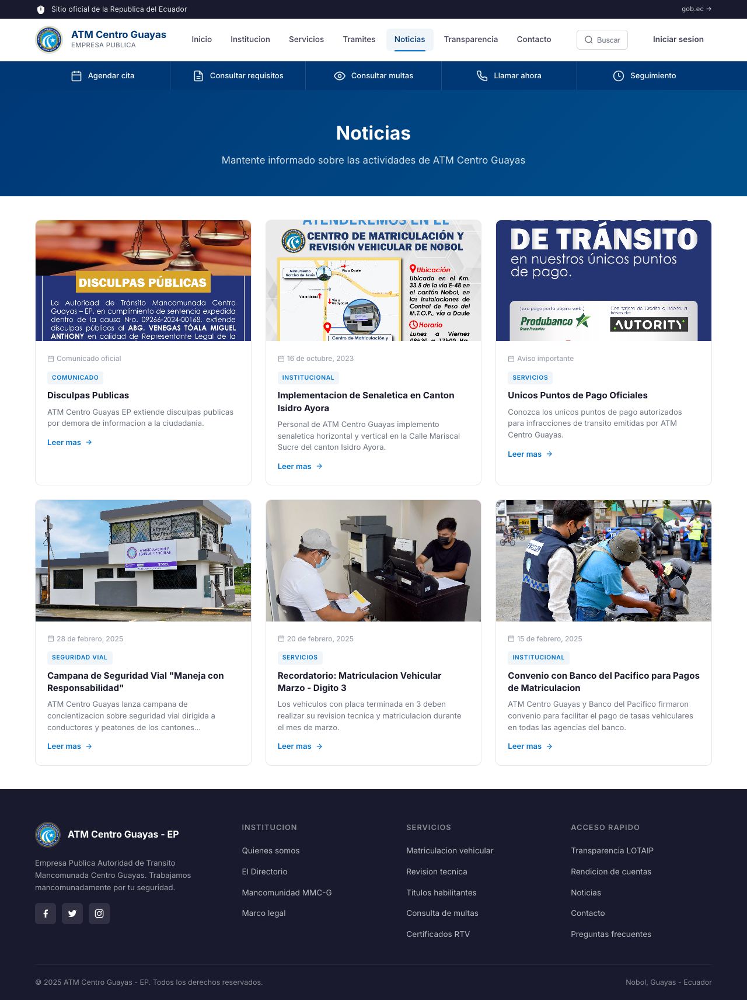
Cada noticia se presenta en formato de tarjeta con imagen destacada, fecha de publicacion, categoria (Comunicado, Institucional, Servicios, Seguridad Vial), titulo y resumen. Al hacer clic, se accede a la pagina de detalle.
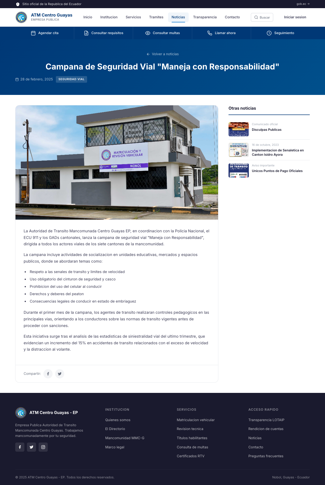
La pagina de detalle utiliza un layout de dos columnas: el articulo principal con imagen, contenido formateado (parrafos y listas) y botones de compartir en redes sociales (Facebook, Twitter); y una barra lateral con tres noticias relacionadas para fomentar la navegacion continua.
Seccion dedicada al cumplimiento de la Ley Organica de Transparencia y Acceso a la Informacion Publica (LOTAIP), obligatoria para todas las entidades del sector publico ecuatoriano.
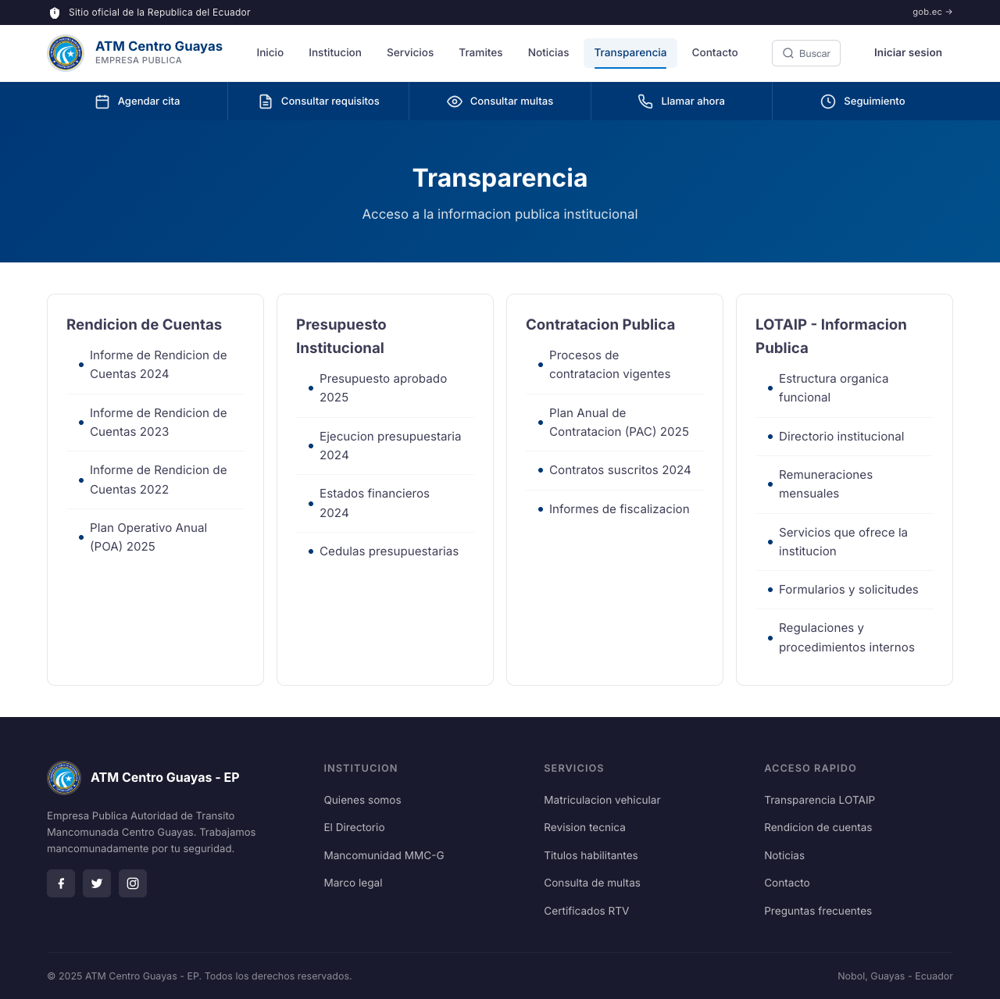
Se organiza en cuatro categorias principales:
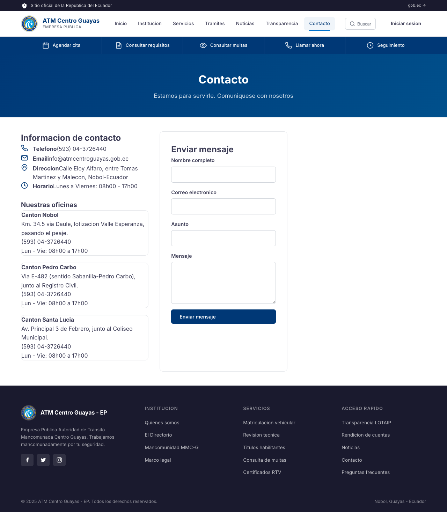
La pagina de contacto proporciona multiples canales de comunicacion:
Para acceder a los servicios transaccionales (tramites en linea, consulta de multas, dashboard personal), el ciudadano debe crear una cuenta en el portal. El sistema de autenticacion ha sido disenado priorizando la simplicidad, la seguridad y el cumplimiento de la normativa ecuatoriana de proteccion de datos.
El proceso de registro se organiza en tres pasos para reducir la percepcion de complejidad y guiar al usuario de forma progresiva:
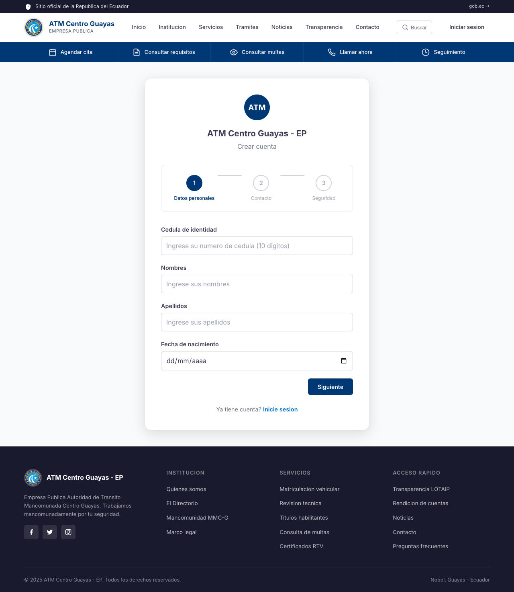
Al completar el registro, el usuario es autenticado automaticamente y redirigido a su dashboard personal.
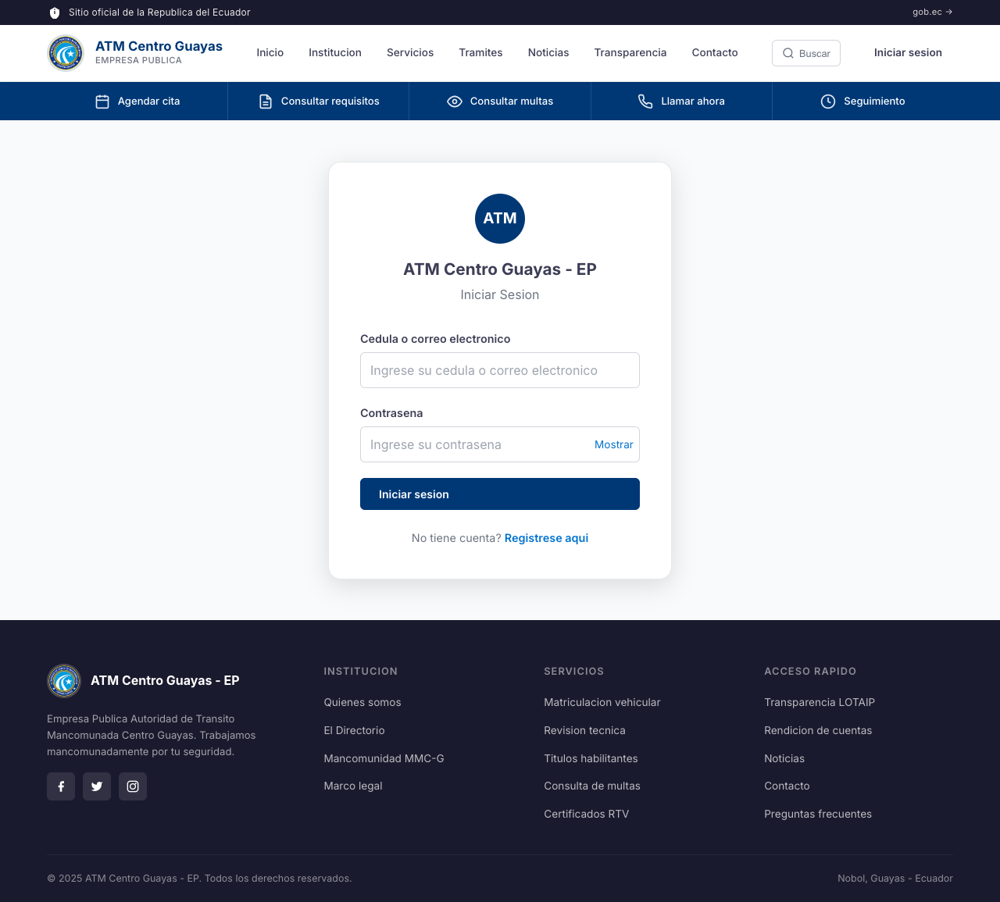
El login permite autenticarse mediante cedula de identidad o correo electronico, junto con la contrasena. Incluye opcion de mostrar/ocultar contrasena y enlace al formulario de registro para usuarios nuevos. Tras un inicio de sesion exitoso, el usuario es redirigido a la pagina que intentaba acceder (o al dashboard si accedio directamente al login).
Las siguientes secciones del portal requieren autenticacion previa:
El componente ProtectedRoute verifica la sesion activa y, en caso de no existir, redirige al login preservando la URL de destino para retomar la navegacion tras autenticarse.
El dashboard es el panel de control personalizado de cada usuario registrado. Centraliza toda la informacion relevante de sus interacciones con la institucion en una interfaz clara y orientada a la accion.
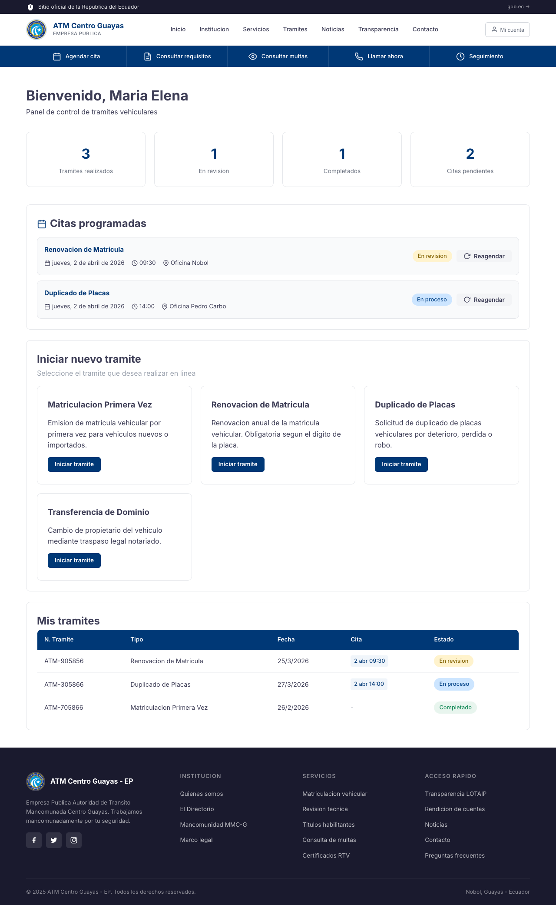
Saludo con el nombre del usuario y mensaje contextual.
Cuatro indicadores numericos: total de tramites realizados, tramites en revision, completados y rechazados. Permite al ciudadano tener una vision rapida de su situacion.
Seccion que muestra las citas presenciales pendientes del ciudadano, con fecha, hora y oficina asignada. Cada cita incluye un boton de 'Reagendar' que permite cambiar la fecha y hora hasta 24 horas antes de la cita programada. Si faltan menos de 24 horas, el sistema informa que ya no es posible reagendar, garantizando la organizacion logistica de las oficinas.
Grid con los cuatro tramites disponibles en linea, cada uno con icono, nombre y boton de inicio directo. El ciudadano puede iniciar un tramite con un solo clic desde su dashboard.
Tabla con el registro de todos los tramites realizados, mostrando: numero de referencia (ATM-XXXXXX), tipo de tramite, fecha de solicitud y estado actual con badge de color (verde=completado, amarillo=en revision, azul=en proceso, rojo=rechazado).
La plataforma contempla 13 tramites vehiculares, de los cuales 4 estan habilitados para gestion online completa y 9 requieren gestion presencial (con posibilidad de digitalizacion futura). La siguiente tabla detalla el catalogo:
| # | Tramite | Categoria | Modalidad | Costo aprox. | Tiempo est. |
|---|---|---|---|---|---|
| 1 | Matriculacion Primera Vez | Matriculacion | Online | $62 - $120 | 5-10 dias |
| 2 | Renovacion de Matricula | Matriculacion | Online | $42 - $85 | 3-5 dias |
| 3 | Duplicado de Placas | Documentos | Online | $35 - $50 | 5-8 dias |
| 4 | Transferencia de Dominio | Matriculacion | Online | $55 - $130 | 5-10 dias |
| 5 | Cambio de Caracteristicas | Actualizacion | Presencial | $30 - $45 | 5-10 dias |
| 6 | Bloqueo Vehicular | Documentos | Presencial | $15 - $25 | 3-5 dias |
| 7 | Desbloqueo Vehicular | Documentos | Presencial | $15 - $25 | 3-5 dias |
| 8 | Certificado de Matriculacion | Documentos | Presencial | $8 - $15 | 1-3 dias |
| 9 | Duplicado de Matricula | Documentos | Presencial | $25 - $35 | 5-8 dias |
| 10 | Cambio de Servicio | Actualizacion | Presencial | $45 - $80 | 8-15 dias |
| 11 | Actualizacion de Domicilio | Actualizacion | Presencial | $5 - $10 | 1-3 dias |
| 12 | Actualizacion Datos Personales | Actualizacion | Presencial | $5 - $10 | 1-3 dias |
| 13 | Actualizacion Datos Vehiculo | Actualizacion | Presencial | $10 - $20 | 3-5 dias |
Criterio de seleccion para modalidad online: Los cuatro tramites habilitados en linea fueron seleccionados por su alta frecuencia de solicitud, la viabilidad de verificacion documental remota y la ausencia de requisitos que demanden inspeccion fisica del vehiculo (excepto revision tecnica, que se realiza en centros autorizados). Los nueve tramites presenciales requieren, en su mayoria, entrega de documentos fisicos, inspeccion vehicular directa o coordinacion con entidades judiciales.
Los tramites en linea se gestionan mediante un wizard (asistente) multi-paso que guia al ciudadano a traves de cada etapa del proceso. Este patron de interaccion reduce la complejidad percibida al dividir formularios extensos en pasos manejables, con indicador visual de progreso.
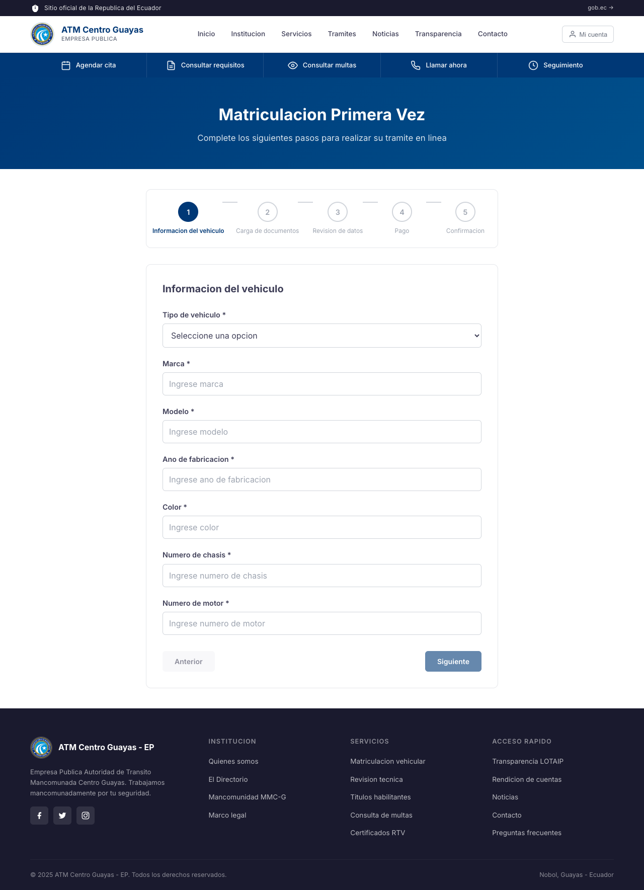
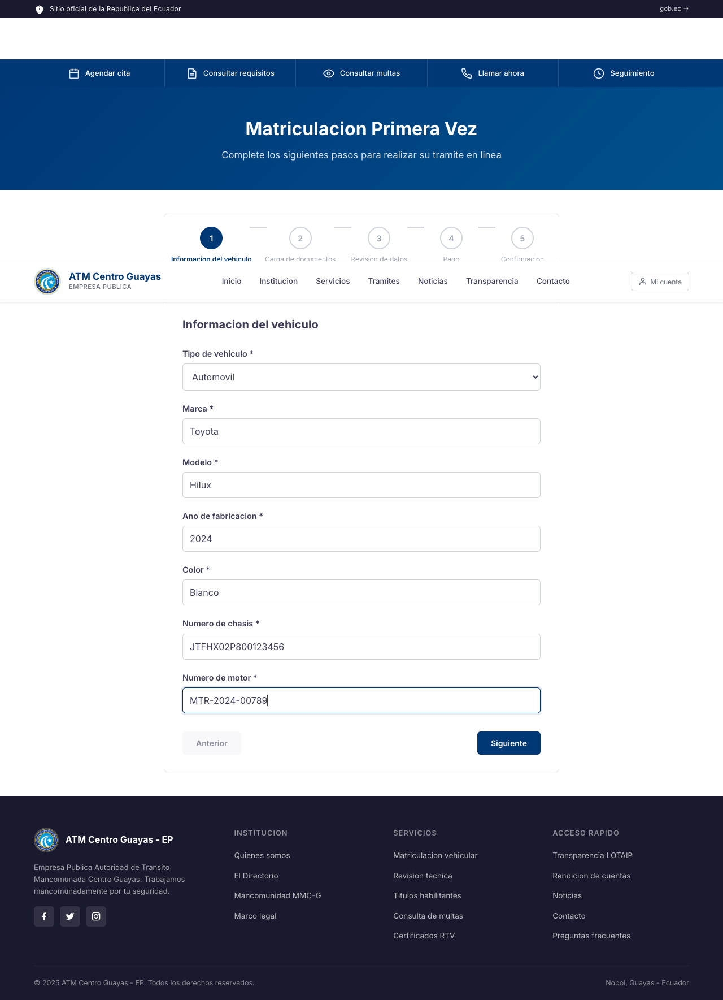
El portal integra un modulo de pago online simulado que demuestra la experiencia de pago completa. En el entorno de produccion, este modulo se conectara con una pasarela de pagos certificada.
El modal de pago ofrece tres metodos:
| Metodo | Campos requeridos | Descripcion |
|---|---|---|
| Tarjeta de debito/credito | Numero de tarjeta, nombre del titular, fecha de expiracion, CVV | Pago directo con tarjeta bancaria. Se valida formato de numero (16 digitos) y fecha de expiracion. |
| Transferencia bancaria | Banco de origen, numero de cuenta, numero de referencia | El ciudadano realiza la transferencia desde su banca en linea y registra la referencia del comprobante. |
| Deposito bancario | Banco, numero de deposito, fecha del deposito | Para ciudadanos que prefieren depositar en ventanilla. Se carga el comprobante del deposito. |
El flujo de pago incluye cuatro etapas: seleccion de metodo, ingreso de datos, confirmacion con resumen y pantalla de exito con numero de comprobante. Una barra de progreso visual indica al ciudadano en que etapa se encuentra.
Una vez completado el pago del tramite, el ciudadano debe agendar una cita presencial para la verificacion documental o entrega de placas/matricula en una de las tres oficinas de ATM Centro Guayas. El sistema de agendamiento esta integrado directamente en el wizard de tramite como un paso adicional.
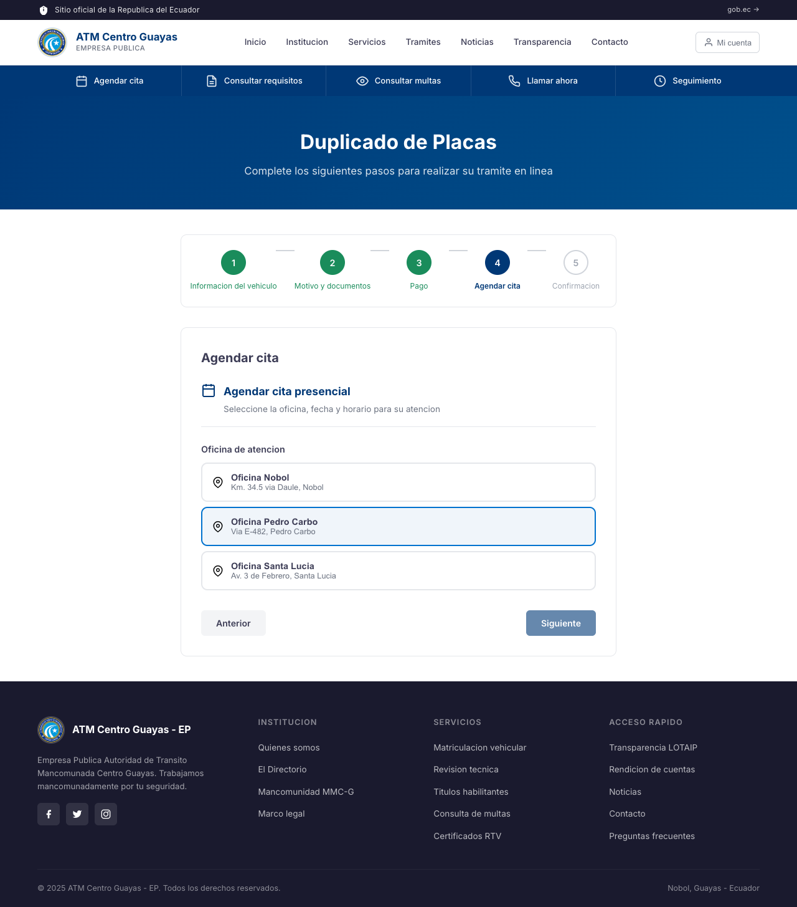
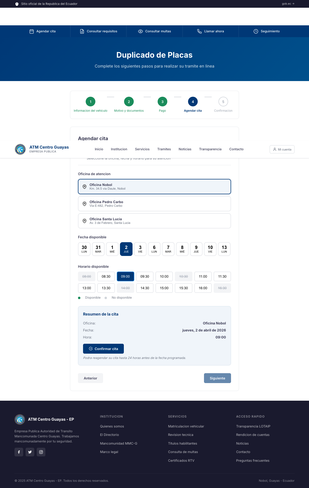
Politica de reagendamiento: El ciudadano puede modificar la fecha y hora de su cita desde su Dashboard personal, siempre que falten mas de 24 horas para la cita programada. Esta restriccion permite a la institucion organizar los recursos de atencion y evitar espacios vacios de ultima hora. El sistema valida automaticamente esta regla y deshabilita la opcion de reagendamiento cuando no se cumple.
Integracion con Odoo: Una vez confirmada y pagada la cita, el sistema puede enviar automaticamente el registro al modulo de turnos de Odoo utilizado actualmente por la institucion (ver seccion 12.1), creando el turno correspondiente sin intervencion manual del personal.
Al completar un tramite, el portal presenta al ciudadano una encuesta de satisfaccion que permite evaluar su experiencia con el servicio. Esta herramienta de retroalimentacion es fundamental para la mejora continua de la gestion institucional y el cumplimiento de indicadores de calidad del servicio publico.
La encuesta evalua cuatro dimensiones del servicio mediante una escala de 1 a 5 estrellas:
Adicionalmente, el ciudadano puede incluir comentarios de texto libre con sugerencias o experiencias especificas. La participacion en la encuesta es voluntaria y puede ser omitida.
Los datos de las encuestas se almacenan de forma anonimizada y pueden ser utilizados para: generacion de reportes de satisfaccion ciudadana, identificacion de puntos de mejora en los procesos, cumplimiento de indicadores de gestion institucional y rendicion de cuentas ante organismos de control.
El modulo de consulta de multas permite al ciudadano verificar si mantiene infracciones de transito pendientes de pago, emitidas por los agentes de ATM Centro Guayas en los cantones de la mancomunidad.
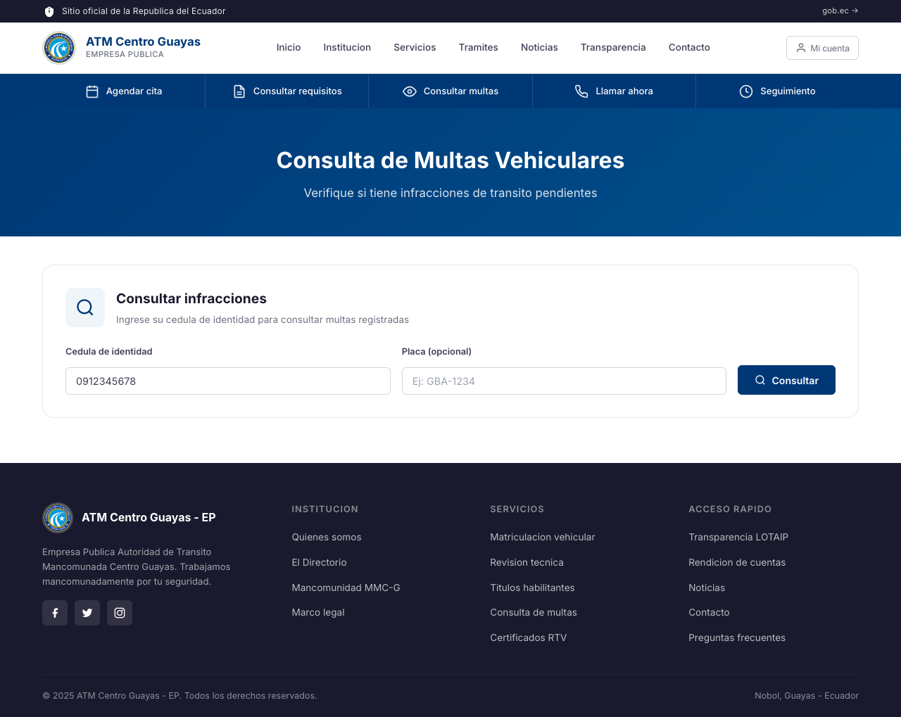
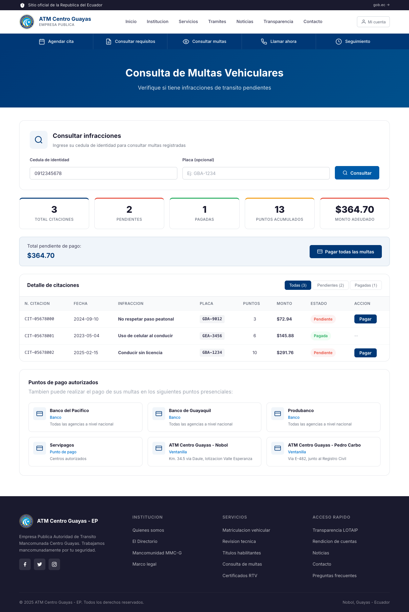
Adicionalmente, la pagina incluye una seccion de Puntos de Pago Autorizados que lista los seis canales oficiales para el pago de multas:
El modulo de seguimiento permite a cualquier ciudadano (sin necesidad de autenticarse) consultar el estado de un tramite previamente iniciado, utilizando el numero de referencia proporcionado al momento de la solicitud.
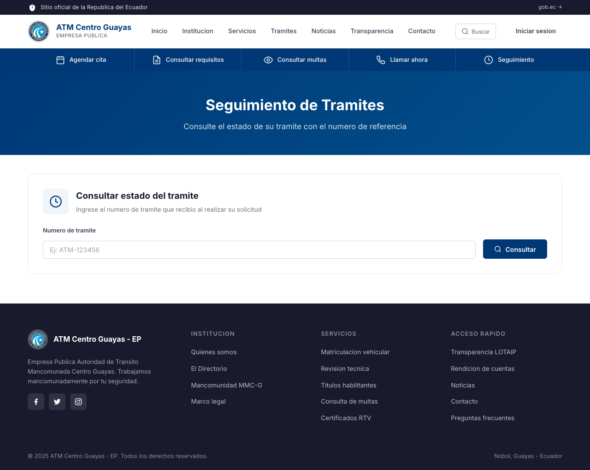
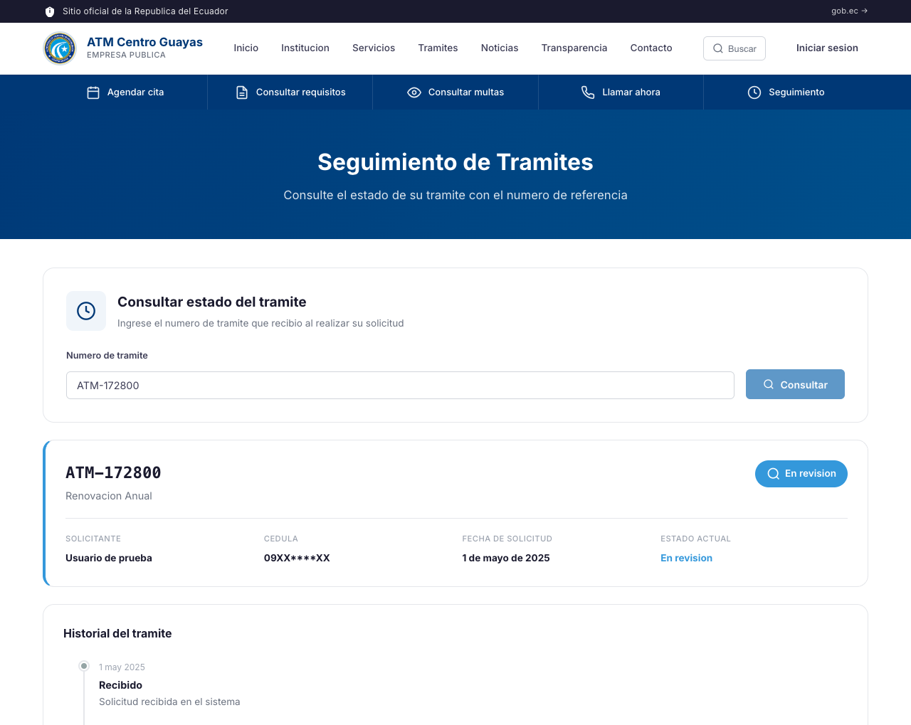
Acceso publico por diseno: La decision de no requerir autenticacion para el seguimiento de tramites responde a un criterio de usabilidad: el ciudadano puede compartir el numero de referencia con un tercero (familiar, gestor) para que consulte el estado, sin necesidad de compartir credenciales de acceso.
La seguridad de la plataforma es una prioridad arquitectonica que abarca multiples capas de proteccion, desde la infraestructura de red hasta la gestion de sesiones de usuario. El diseno de seguridad sigue el principio de defensa en profundidad (Defense in Depth), donde multiples controles complementarios protegen la informacion y los servicios.
Se recomienda la implementacion de un Web Application Firewall (WAF) como primera linea de defensa ante ataques web. El WAF puede desplegarse como servicio gestionado (Cloudflare WAF, AWS WAF) o como solucion on-premise (ModSecurity).
Funciones del WAF:
El sistema implementa mecanismos de control de acceso a nivel de aplicacion:
| Header | Valor | Proteccion |
|---|---|---|
| Content-Security-Policy | default-src 'self'; script-src 'self' | Previene XSS y carga de scripts externos |
| X-Frame-Options | DENY | Previene clickjacking |
| X-Content-Type-Options | nosniff | Previene MIME sniffing |
| Strict-Transport-Security | max-age=31536000; includeSubDomains | Fuerza HTTPS |
| Referrer-Policy | strict-origin-when-cross-origin | Controla informacion del referrer |
| Permissions-Policy | camera=(), microphone=(), geolocation=(self) | Restringe APIs del navegador |
La proteccion de datos personales es un pilar fundamental del diseno de la plataforma, alineado con la Ley Organica de Proteccion de Datos Personales (LOPDP) del Ecuador, vigente desde mayo de 2021, y su reglamento de aplicacion.
El portal opera bajo los siguientes principios, conforme al Art. 10 de la LOPDP:
| Dato | Finalidad | Base legal |
|---|---|---|
| Cedula de identidad | Identificacion unica del ciudadano, vinculacion con registros vehiculares | Requisito legal para tramites vehiculares (LOTTTSV Art. 89) |
| Nombres y apellidos | Personalizacion de la experiencia, generacion de documentos | Consentimiento del titular |
| Correo electronico | Comunicacion de estados de tramites, recuperacion de cuenta | Consentimiento del titular |
| Telefono | Canal alternativo de comunicacion para notificaciones urgentes | Consentimiento del titular |
| Direccion | Verificacion domiciliaria requerida para tramites de matriculacion | Requisito legal (LOTTTSV) |
| Datos del vehiculo | Gestion de tramites de matriculacion, consulta de infracciones | Requisito legal para registro vehicular |
Conforme a los articulos 17-22 de la LOPDP, el ciudadano registrado tiene derecho a:
La plataforma no almacena datos bancarios o de tarjetas de credito/debito. El procesamiento de pagos se delega integramente a la pasarela de pagos certificada, que cumple con los estandares PCI DSS (Payment Card Industry Data Security Standard). ATM Centro Guayas solo recibe una confirmacion de la transaccion (numero de referencia, monto, fecha) sin acceso a los datos financieros del ciudadano.
ATM Centro Guayas cuenta actualmente con sistemas operativos internos que gestionan diversas funciones institucionales. La nueva plataforma web esta disenada para integrarse con estos sistemas existentes, maximizando la inversion tecnologica ya realizada y evitando la duplicacion de datos y procesos.
La institucion utiliza actualmente Odoo como plataforma de gestion de turnos para la atencion presencial en sus oficinas. La integracion propuesta permite que los turnos generados desde el portal web se sincronicen automaticamente con Odoo, eliminando la necesidad de registro manual por parte del personal.
Nota importante: Si Odoo no cuenta actualmente con una API configurada para recibir turnos externos, sera necesario desarrollar un modulo personalizado o configurar los endpoints correspondientes. Este desarrollo puede realizarse en paralelo con la Fase 3 (Backend) del proyecto y tiene un costo estimado adicional de $1,500 - $3,000 dependiendo de la complejidad del modulo de turnos existente.
ATM Centro Guayas dispone de servicios oficiales que proveen informacion sobre multas e infracciones de transito. Sin embargo, se ha identificado que estos servicios presentan intermitencias en su disponibilidad y limitaciones en el detalle de la informacion proporcionada.
| Estrategia | Descripcion | Beneficio |
|---|---|---|
| Cache con TTL | Almacenar en cache las consultas exitosas por un periodo configurable (ej: 15 minutos). Si el servicio no responde, mostrar los ultimos datos disponibles con indicacion de la hora de actualizacion | Reduce dependencia del servicio externo y mejora tiempos de respuesta |
| Circuit Breaker | Implementar el patron Circuit Breaker: tras N fallas consecutivas del servicio, dejar de consultarlo por M minutos y mostrar un mensaje informativo al ciudadano | Evita saturar un servicio inestable y mejora la experiencia ante caidas |
| Fallback con datos locales | Mantener una copia local sincronizada periodicamente (batch nocturno) de las infracciones. Si el servicio en tiempo real falla, consultar la copia local | Garantiza disponibilidad del servicio de consulta incluso ante caidas prolongadas |
| Mensajes informativos | Cuando el servicio externo no responde, mostrar al ciudadano un mensaje claro: "El servicio de consulta de multas esta temporalmente fuera de linea. Por favor intente nuevamente en unos minutos o contacte nuestras oficinas." | Transparencia con el ciudadano, reduccion de frustracion |
| Reintentos con backoff | Implementar reintentos automaticos con espera exponencial (1s, 2s, 4s) antes de declarar falla | Maneja blips temporales sin afectar la experiencia |
| Monitoreo de SLA | Dashboard interno que monitorea la disponibilidad y tiempos de respuesta del servicio de multas, con alertas automaticas | Visibilidad operativa para el equipo de TI |
Recomendacion: Se sugiere que ATM Centro Guayas solicite al proveedor del servicio de multas documentacion actualizada de la API (endpoints, formatos, codigos de error, limites de tasa) y un acuerdo de nivel de servicio (SLA) que establezca compromisos de disponibilidad. Si el servicio actual no dispone de una API formal, se propone desarrollar una capa de abstraccion (API Gateway) que centralice y normalice las consultas.
La definicion de la infraestructura de alojamiento es una decision critica que impacta en la disponibilidad, el rendimiento, la seguridad y los costos operativos de la plataforma. A continuacion se analizan tres escenarios de despliegue con sus ventajas, desventajas y recomendaciones.
| Aspecto | Detalle |
|---|---|
| Proveedor | DigitalOcean App Platform, AWS, Google Cloud |
| Modelo | Plataforma como Servicio (PaaS) |
| Ventajas | Escalabilidad automatica, alta disponibilidad (99.9%+ SLA), SSL automatico, backups gestionados, deploy automatico desde GitHub, sin necesidad de administracion de servidores |
| Desventajas | Dependencia de proveedor externo, datos fuera de la institucion (mitigable con cifrado), costo recurrente mensual |
| Costo estimado | $25 - $60/mes (app + DB + storage) |
| Requerimiento | Comunicacion con los servicios internos de ATM (API de multas, Odoo) a traves de VPN site-to-site o endpoints publicos seguros |
Esta opcion requiere que los servicios internos de la institucion (Odoo, sistema de multas) expongan endpoints accesibles desde internet de forma segura (HTTPS + autenticacion por API key o OAuth). Si los servicios internos solo estan disponibles en la red local, se debe configurar una VPN site-to-site entre el proveedor cloud y la red de ATM Centro Guayas.
| Aspecto | Detalle |
|---|---|
| Ubicacion | Servidores actuales de ATM Centro Guayas |
| Modelo | On-premise / infraestructura propia |
| Ventajas | Datos dentro de la institucion, acceso directo a servicios internos (Odoo, DB de multas) sin necesidad de VPN, control total de la infraestructura |
| Desventajas | Requiere personal de TI dedicado para administracion, actualizaciones de seguridad manuales, disponibilidad limitada por capacidad del data center, riesgo de caida por fallas electricas o de red local |
| Costo estimado | $0/mes adicional (usa infraestructura existente) + costo de personal TI |
| Requerimiento | Servidor con Node.js 20+, Nginx/Apache como reverse proxy, certificado SSL, minimo 2GB RAM, 20GB disco |
La pagina web puede desplegarse directamente en los servidores de la institucion si estos cuentan con la capacidad y conectividad necesarias. Esta opcion simplifica la comunicacion con servicios internos pero traslada la responsabilidad de mantenimiento, seguridad y disponibilidad al equipo de TI de ATM Centro Guayas.
Se propone un modelo hibrido donde el frontend (portal web) se aloja en la nube y el backend/API se ejecuta en los servidores de la institucion. Esto combina las ventajas de ambos modelos:
Este modelo permite que la pagina web este siempre disponible (incluso si los servidores internos presentan intermitencias) y muestre contenido informativo (noticias, servicios, transparencia), mientras que las funciones transaccionales (tramites, multas, pagos) dependen de la comunicacion con el backend on-premise.
Recomendacion: Para la fase de prototipo y lanzamiento inicial, se recomienda la Opcion A (hosting cloud completo) con la Opcion C como objetivo de mediano plazo una vez que se desarrolle el backend y se configuren las integraciones con los sistemas internos.
El siguiente presupuesto contempla los costos de desarrollo, infraestructura y mantenimiento de la plataforma para su primer ano de operacion.
| Concepto | Detalle | Costo estimado |
|---|---|---|
| Diseno UI/UX | Investigacion de usuarios, wireframes, prototipado, diseno visual | $3,500 - $5,000 |
| Desarrollo frontend | Aplicacion React completa, 13+ paginas, componentes, responsive | $8,000 - $12,000 |
| Desarrollo backend (API) | API REST, autenticacion, base de datos, logica de negocio | $6,000 - $9,000 |
| Integracion pasarela de pagos | Configuracion y pruebas con pasarela certificada PCI DSS | $2,000 - $3,500 |
| Integracion Odoo + API multas | Desarrollo de conectores y API si no existe | $1,500 - $3,000 |
| Pruebas y QA | Testing funcional, seguridad, rendimiento, accesibilidad | $1,500 - $2,500 |
| Capacitacion | Entrenamiento al personal de ATM en gestion del portal | $800 - $1,200 |
| Subtotal desarrollo | $23,300 - $36,200 |
| Concepto | Proveedor/Especificacion | Costo mensual |
|---|---|---|
| Hosting aplicacion | DigitalOcean App Platform (Starter/Basic) | $5 - $12 |
| Base de datos | DigitalOcean Managed PostgreSQL (1 GB RAM) | $15 - $25 |
| Dominio | Renovacion anual (prorrateado) | $1.50 |
| Certificado SSL | Let's Encrypt (gratuito) / incluido en hosting | $0 |
| CDN y almacenamiento | DigitalOcean Spaces (documentos subidos) | $5 - $10 |
| Monitoreo | UptimeRobot (plan gratuito) + logs | $0 |
| Subtotal infraestructura | $26.50 - $48.50 /mes |
| Concepto | Detalle | Costo mensual |
|---|---|---|
| Soporte tecnico | Correccion de errores, actualizaciones de seguridad | $300 - $500 |
| Actualizaciones de contenido | Noticias, documentos de transparencia, datos institucionales | $150 - $250 |
| Backups | Respaldos automaticos diarios de base de datos | $5 - $10 |
| Subtotal mantenimiento | $455 - $760 /mes |
| Concepto | Primer ano | Anos subsiguientes |
|---|---|---|
| Desarrollo (unico) | $23,300 - $36,200 | $0 |
| Infraestructura (anual) | $318 - $582 | $318 - $582 |
| Mantenimiento (anual) | $5,460 - $9,120 | $5,460 - $9,120 |
| Total | $29,078 - $45,902 | $5,778 - $9,702 |
Retorno de inversion (ROI): Considerando que ATM Centro Guayas procesa aproximadamente 15,000 tramites vehiculares anuales y que la digitalizacion podria reducir un 60% de las visitas presenciales (9,000 tramites), el ahorro en costos operativos (personal de ventanilla, insumos, espacio fisico) y la reduccion de tiempos de procesamiento pueden generar un retorno de inversion positivo dentro de los primeros 12-18 meses de operacion.
El proyecto se estructura en cinco fases con una duracion total estimada de 16-20 semanas (4-5 meses).
| Fase | Actividades | Duracion | Entregables |
|---|---|---|---|
| Fase 1: Diseno y Prototipado | Investigacion de usuarios, diseno UI/UX, prototipo interactivo, aprobacion visual | 2-3 semanas | Prototipo funcional aprobado (completado) |
| Fase 2: Desarrollo Frontend | Componentes React, paginas, formularios, responsive, accesibilidad | 4-5 semanas | Aplicacion frontend funcional con datos simulados |
| Fase 3: Desarrollo Backend | API REST, base de datos, autenticacion JWT, integracion pasarela de pagos, validacion de documentos | 5-6 semanas | API documentada, base de datos en produccion |
| Fase 4: Pruebas y QA | Testing funcional, pruebas de seguridad (pentesting), pruebas de rendimiento (load testing), correccion de bugs | 2-3 semanas | Reporte de pruebas, certificacion de seguridad |
| Fase 5: Despliegue y Capacitacion | Configuracion de produccion, migracion de datos, capacitacion al personal, lanzamiento controlado | 2-3 semanas | Portal en produccion, manual de usuario, personal capacitado |
| Fase | Sem 1-3 | Sem 4-8 | Sem 9-14 | Sem 15-17 | Sem 18-20 |
|---|---|---|---|---|---|
| Fase 1: Diseno | ====== | ||||
| Fase 2: Frontend | ============ | === | |||
| Fase 3: Backend / API | ============ | ====== | |||
| Fase 4: Pruebas y QA | ====== | ||||
| Fase 5: Despliegue | ====== |
El rediseno del portal web de ATM Centro Guayas representa una transformacion significativa en la forma en que la institucion se relaciona con la ciudadania. La plataforma propuesta no solo moderniza la presencia digital de la entidad, sino que digitaliza procesos que historicamente han requerido la presencia fisica del ciudadano, con el consecuente ahorro de tiempo, recursos y reduccion de la huella burocratica.
El prototipo funcional se encuentra disponible en linea para pruebas y evaluacion:
| Elemento | Detalle |
|---|---|
| URL del prototipo | https://atm-centro-guayas-dfirx.ondigitalocean.app |
| Usuario de prueba | Cedula: 0912345678 |
| Contrasena | Demo12345 |
Con estas credenciales se puede acceder al dashboard, iniciar tramites en linea, consultar multas y probar todas las funcionalidades de la plataforma. Tambien es posible:
Alcance del prototipo: Los datos mostrados (multas, tramites, pagos) son simulados con fines demostrativos. Ningun dato ingresado en el prototipo es almacenado en servidores externos ni tiene validez institucional. El prototipo representa exclusivamente los flujos de interaccion propuestos y servira como base para el levantamiento final de requisitos.
Propuesta Tecnica - Portal ATM Centro Guayas EP
Documento confidencial | Marzo 2026 | Version 1.0